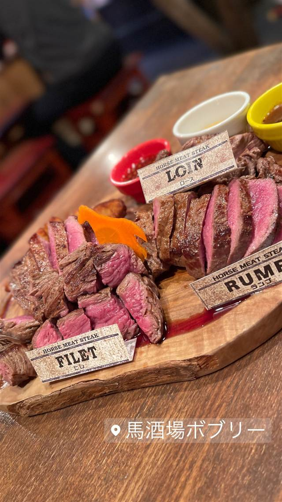

馬酒場ボブリー
馬刺しだけじゃない、馬肉ステーキやミニバーガー
馬酒場ボブリー
馬酒場ボブリーは、新橋の人気馬肉居酒屋「馬喰ろう」が手がける初の洋風業態。千葉県産の新鮮な馬肉を使い、馬肉ステーキやミニバーガーなど「馬刺しだけではない」普段使いの馬肉料理を提案している。
TRIVIA
豆知識
- 「馬肉＝馬刺し」のイメージを覆し、普段使いできる洋風馬肉料理を打ち出した店
- 馬肉専門店「馬喰ろう」にとって初めての洋風業態
REVIEWS
世間の評判
3.47食べログ
臭みのない馬肉とお得な価格
- 臭みがなく旨みたっぷりの馬肉の質の良さを評価する声が非常に多い
- 3種の部位が楽しめるボブリースペシャルを必食と評価する声が多い
- サワーなどドリンクが500円以下と安くコスパが良いという声が多い
- 人気メニューは提供まで時間がかかるため早めの注文を勧める声がある
食べログ 口コミ373件
| 系譜 | 新橋の馬肉専門居酒屋「馬喰ろう」（株式会社馬喰ろう、2007年に神田で1号店開業、2010年設立）の姉妹業態で、同社初の洋風スタイルの店舗。 |
|---|---|
| 看板 | 馬肉ステーキやミニバーガーなど、洋風にアレンジした馬肉料理。 |
| こだわり | 千葉県から仕入れた新鮮な馬肉を使い、輸送時間を短縮することで鮮度を保っている。 |
| どこから | 都心 |
| 営業時間 | 月〜金 17:00-23:00 土 16:00-22:00 日 休み |
| 予算 | 夜 ¥3,000～¥3,999 |
| 場所 | 新橋駅 東京都港区新橋3-2-4 |
食べたもの：馬肉ステーキ
OFFICIAL
店からの知らせ
NEARBY
近い店・同じ系統の店
-
 ピザ 新橋駅
マルゴ 新橋
珍しいウォークイン型ワインセラーと生ハムピザ
夜 ¥4,000～¥4,999
ピザ 新橋駅
マルゴ 新橋
珍しいウォークイン型ワインセラーと生ハムピザ
夜 ¥4,000～¥4,999
-
 インド 内幸町駅・虎ノ門駅
ナンディニ 虎ノ門店 (NANDHINI)
食べログ百名店に選ばれた南インドミールスとドーサ
昼 ¥1,000～¥1,999 夜 ¥2,000～¥2,999
インド 内幸町駅・虎ノ門駅
ナンディニ 虎ノ門店 (NANDHINI)
食べログ百名店に選ばれた南インドミールスとドーサ
昼 ¥1,000～¥1,999 夜 ¥2,000～¥2,999
-
 つけ麺 新橋駅
麺屋 周郷
高圧釜で骨まで炊き上げた濃厚豚骨魚介つけ麺
昼 ¥1,000～¥1,999 夜 ¥1,000～¥1,999
つけ麺 新橋駅
麺屋 周郷
高圧釜で骨まで炊き上げた濃厚豚骨魚介つけ麺
昼 ¥1,000～¥1,999 夜 ¥1,000～¥1,999
-
 つけ麺 新橋駅
新橋 纏(まとい)
町火消の旗印にちなむ店名、平子煮干しの滋味深いそば
昼 ～¥999 夜 ～¥999
つけ麺 新橋駅
新橋 纏(まとい)
町火消の旗印にちなむ店名、平子煮干しの滋味深いそば
昼 ～¥999 夜 ～¥999
-
 家系 新橋
らーめん谷瀬家 新橋本店
三浦家から免許皆伝を受けた店主の家系ラーメン
昼 ～¥999 夜 ～¥999
家系 新橋
らーめん谷瀬家 新橋本店
三浦家から免許皆伝を受けた店主の家系ラーメン
昼 ～¥999 夜 ～¥999
-
 味噌 御成門
麺恋処 き楽
代々木の人気店いそじの姉妹店、もちもち麺の豚骨魚介つけ麺
昼 ¥1,000～¥1,999 夜 ¥1,000～¥1,999
味噌 御成門
麺恋処 き楽
代々木の人気店いそじの姉妹店、もちもち麺の豚骨魚介つけ麺
昼 ¥1,000～¥1,999 夜 ¥1,000～¥1,999
ONSEN & SAUNA